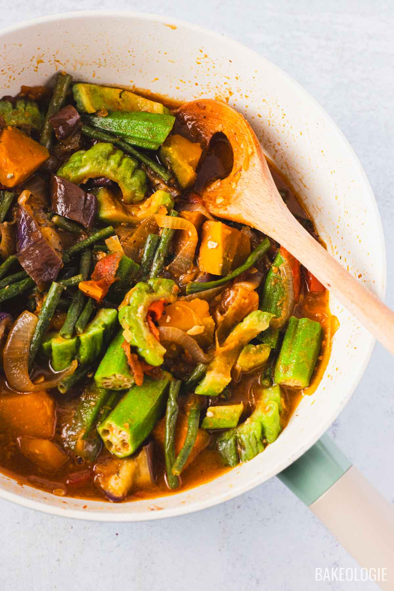
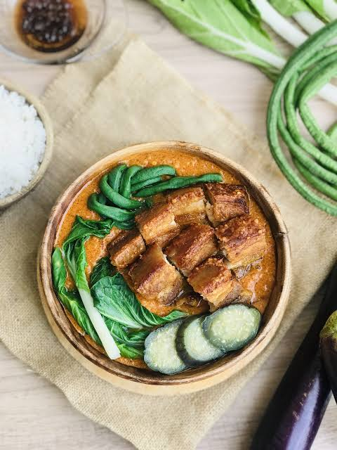
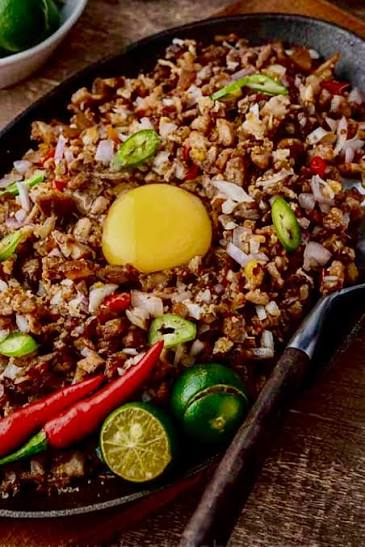
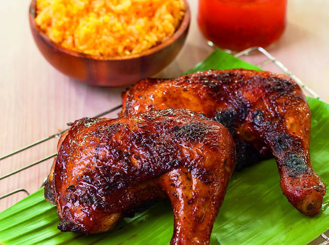
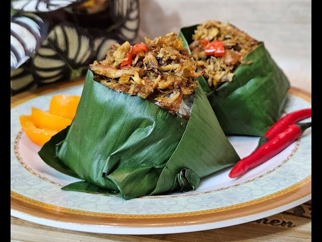
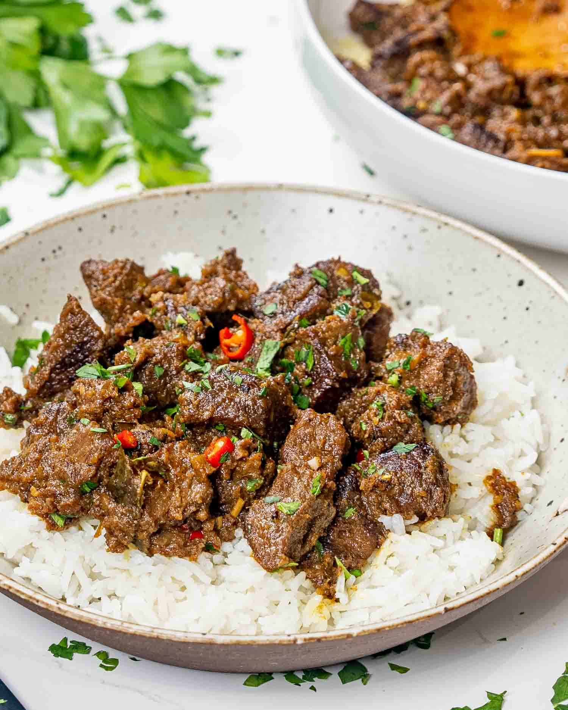
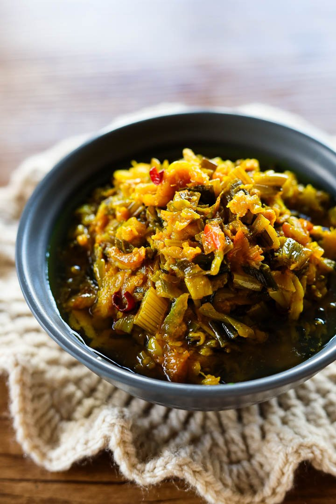

TOURIST SPOT
| HOME | PLACE | FOOD |
|---|
LUZON
 Pinakbet. A signature Ilocano vegetable stew made with bitter melon, eggplant, okra, and string beans, flavored with bagoong isda (fermented fish paste). |  Kare-Kare. A famous Filipino stew made with oxtail, tripe, and vegetables, all bathed in a rich, savory peanut sauce and typically served with salty bagoong alamang (shrimp paste). |  Sisig. The Philippines' ultimate sizzling bar chow, originating from Angeles City, Pampanga. It is made from chopped, boiled, and grilled pig's face and ears tossed with onions, chicken liver, and calamansi. |
VISAYAS
Kinilaw. A raw fish or seafood dish "cooked" in natural vinegar, calamansi, ginger, and chili. |  Chicken Inasal. Chicken marinated in calamansi, ginger, and lemongrass, basted in annatto oil, and grilled over an open flame. | Kansi. A hearty, sour beef and bone marrow soup made with batuan (a souring agent) and unripe jackfruit. |
MINDANAO
 Chicken pastil. A simple but beloved Maguindanao street food consisting of steamed rice topped with shredded chicken or beef, wrapped in banana leaves. |  Beef Rendang. A rich, caramelized beef curry acquired by Maranaos from Indonesian and Malaysian traders, slow-cooked in coconut milk and spices until tender. |  Palapa. A traditional Maranao condiment made of finely chopped native scallions (sakurab), ginger, and chili, often sautéed and used to top rice or flavor other dishes. |